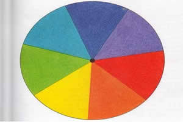

Tecnociência, Óptica e Informação
Introdução à Óptica
A óptica é o ramo da Física responsável por estudar a luz, suas formas de propagação e a maneira como ela interage com a matéria.
Para pessoas com baixa visão, a óptica é a base teórica e prática para a criação de lupas, óculos especiais, lentes de aumento e filtros de contraste, permitindo maior inclusão e autonomia na leitura e na navegação visual.
1. Apresentação da Atividade: Disco de Newton
O objetivo principal desta atividade foi compreender, de forma prática, como a luz branca está relacionada às diferentes cores do espectro visível, utilizando como ferramenta prática o Disco de Newton.
A atividade foi realizada individualmente, e cada aluno construiu seu próprio disco utilizando materiais simples e acessíveis, como papel sulfite, papelão, lápis de cor, tesoura e um palito de madeira para servir de eixo de rotação.
Primeiro, desenhou-se um círculo dividido em sete partes iguais. Cada setor foi pintado cuidadosamente com as cores do arco-íris: vermelho, laranja, amarelo, verde, azul, anil e violeta.
Em seguida, o disco foi fixado ao suporte do palito para garantir que girasse de maneira estável. Após a montagem, foram realizados testes práticos em casa, girando o disco em diferentes velocidades e observando o comportamento visual das cores durante o movimento.
Durante a aula de robótica, os alunos compartilharam suas observações e discutiram os resultados obtidos com o professor e a turma.
Resultado do experimento
Quando o disco atinge uma rotação rápida e constante, as cores individuais deixam de ser percebidas separadamente e ocorre uma mistura visual, resultando em uma tonalidade clara, branca ou acinzentada, dependendo das condições do experimento.
Com essa experiência, foi possível observar na prática a relação entre as cores do espectro visível e a percepção da luz branca.

Disco de Newton desenhado e dividido em sete partes iguais, pintado com as cores do espectro visível: vermelho, laranja, amarelo, verde, azul, anil e violeta.
Princípios envolvidos
Percepção e mistura das cores
Cada setor do disco possui uma cor diferente. Quando o disco gira rapidamente, a sucessão das cores ocorre em um intervalo muito curto e o sistema visual humano não consegue perceber cada setor completamente separado.
Persistência da visão
A percepção visual possui um tempo de processamento. Quando imagens diferentes são apresentadas rapidamente, nosso sistema visual pode integrá-las, produzindo a sensação de continuidade ou de mistura.
Disco de Newton em movimento
Espaço destinado à imagem ou GIF mostrando o disco girando e demonstrando a fusão visual das cores.
2. Explicação Científica
2.1 Quem foi Isaac Newton?
Sir Isaac Newton (1643–1727) foi um dos físicos, matemáticos e astrônomos mais influentes da história da ciência.
Além de formular as famosas Leis do Movimento e a Lei da Gravitação Universal, Newton realizou importantes estudos no campo da óptica, área da Física relacionada ao estudo da luz.
No século XVII, por meio de experimentos com prismas de vidro, Newton contribuiu para transformar a compreensão científica sobre as cores e a natureza da luz solar.
2.2 O que é a Luz Branca?
A luz branca, como a luz emitida pelo Sol, é composta por diferentes componentes do espectro visível. Por isso, pode ser considerada uma luz policromática.
Quando a luz branca atravessa determinados materiais, como um prisma de vidro, seus diferentes comprimentos de onda podem sofrer desvios diferentes, permitindo observar as cores que a compõem.
2.3 Refração da Luz
Quando a luz muda de meio, como do ar para o vidro, sua velocidade muda e sua trajetória pode sofrer um desvio. Esse fenômeno é chamado de refração.
Como as diferentes cores possuem diferentes comprimentos de onda, elas podem sofrer desvios diferentes ao atravessar determinados materiais.
- Vermelho: possui maior comprimento de onda dentro da faixa visível.
- Violeta: possui menor comprimento de onda dentro da faixa visível.
2.4 O Espectro Visível
O espectro visível é a faixa do espectro eletromagnético que pode ser detectada pelo olho humano.
- Vermelho
- Laranja
- Amarelo
- Verde
- Azul
- Anil ou Índigo
- Violeta
2.5 Mistura das Cores: Adição x Subtração
Existem diferentes formas de compreender a mistura de cores.
Mistura aditiva
A mistura aditiva ocorre com luzes coloridas. Na combinação adequada de luzes, a luminosidade aumenta e diferentes combinações podem produzir a percepção de branco.
Mistura subtrativa
A mistura subtrativa ocorre com pigmentos, tintas e materiais que absorvem determinadas partes da luz incidente.
O Disco de Newton é especialmente interessante porque permite observar uma mistura visual das cores durante a rotação rápida do disco.
2.6 Por que o Disco de Newton parece branco quando gira rapidamente?
O efeito observado está relacionado à forma como o sistema visual humano processa informações que mudam rapidamente.
Retenção da informação visual
Quando o disco gira rapidamente, cada setor colorido passa pelo campo visual em um intervalo muito curto.
Sobreposição visual
Como as cores são apresentadas sucessivamente em alta velocidade, o cérebro integra essas informações e deixa de perceber cada setor de maneira completamente isolada.
Fusão das cores
O resultado é a percepção de uma superfície muito mais clara, podendo apresentar uma tonalidade próxima do branco, cinza ou creme, dependendo da distribuição das cores, velocidade de rotação, iluminação e características do disco.
3. Relação com a Deficiência Visual
3.1 Como pessoas com baixa visão percebem a luz?
Pessoas com baixa visão podem manter diferentes graus de visão residual. Dependendo da condição visual, podem distinguir claridade, sombras, formas ou a direção de uma fonte luminosa.
Visão residual
Algumas pessoas conseguem perceber a presença de luz natural ou artificial, o que pode ajudar a identificar se determinado ambiente está claro ou escuro.
Fotofobia
Algumas pessoas apresentam sensibilidade elevada à luz, podendo sentir desconforto em ambientes muito claros ou diante da luz solar intensa.
Ofuscamento
O excesso de luminosidade pode dificultar a adaptação visual, principalmente durante mudanças entre ambientes muito claros e muito escuros.
3.2 Todas as pessoas enxergam as cores da mesma maneira?
Não. A percepção das cores pode variar entre as pessoas. Fatores biológicos, condições visuais, daltonismo, envelhecimento dos olhos e características individuais do sistema visual podem modificar a maneira como determinadas cores são percebidas.
3.3 Como a iluminação interfere na percepção dos objetos?
A iluminação interfere diretamente na maneira como percebemos objetos, cores, texturas, formas, sombras e reflexos.
Cor e tonalidade
Os objetos refletem determinadas faixas da luz que recebem e absorvem outras. Por isso, a iluminação disponível interfere diretamente na aparência das cores.
Temperatura da luz
Luzes quentes, geralmente mais amareladas, podem alterar a aparência de tons quentes. Luzes frias, mais azuladas, também modificam a aparência de diferentes cores.
Forma e relevo
A luz direta pode produzir sombras mais marcadas, ajudando a revelar texturas e relevos. A luz difusa tende a suavizar os contornos.
gem do Disco de NewtonVolume
A combinação entre regiões claras e escuras ajuda o cérebro a interpretar profundidade e tridimensionalidade.
Textura e acabamento
Superfícies polidas ou metálicas podem produzir reflexos intensos, enquanto superfícies foscas espalham a luz em várias direções.
3.4 Por que compreender a formação das cores é importante para desenvolver tecnologias de acessibilidade?
Compreender a formação dagem do Disco de Newtons cores permite desenvolver tecnologias mais acessíveis para pessoas que apresentam diferentes formas de percepção visual.
Aplicativos, telas, gráficos e sistemas de sinalização não devem depender exclusivamente das cores para transmitir informações.
É possível combinar cores com textos, símbolos, padrões, formas e contrastes, tornando as tecnologias mais inclusivas para pessoas com daltonismo ou baixa visão.
Robótica
A robótica integra engenharia, computação e eletrônica para criar dispositivos capazes de automatizar tarefas e auxiliar os seres humanos.
No campo da acessibilidade, a robótica pode contribuir para o desenvolvimento de bengalas inteligentes, próteses motorizadas, dispositivos de navegação e sistemas de auxílio à mobilidade.
4. Tecnologias Existentes
4.1 Óculos Eletrônicos para Baixa Visão
Óculos eletrônicos podem utilizar câmeras e pequenas telas para captar e apresentar imagens de forma ampliada ao usuário.
Dependendo do equipamento, é possível ajustar recursos como ampliação, brilho, contraste e cores.
Como funcionam?
- A câmera capta a imagem do ambiente.
- O sistema processa a imagem.
- A imagem pode ser ampliada.
- O contraste pode ser ajustado.
- As cores podem ser modificadas.
- Alguns equipamentos possuem recursos de leitura de texto.
Possíveis aplicações
- Leitura de livros.
- Leitura de jornais.
- Visualização de placas.
- Identificação de objetos.
- Visualização de rostos.
- Auxílio na utilização de telas.
4.2 Leitores de Cor
Leitores de cor são dispositivos equipados com sensores ópticos capazes de analisar a luz refletida por superfícies e identificar suas cores.
Como funcionam?
O usuário aponta o sensor para uma superfície, como uma roupa, parede, objeto ou embalagem. O dispositivo processa a informação e pode informar a cor por meio de áudio.
Exemplos de respostas:
- “Vermelho.”
- “Azul escuro.”
- “Verde.”
- “Amarelo.”
Possíveis usos
- Escolher roupas.
- Identificar acessórios.
- Organizar objetos por cor.
- Identificar embalagens.
- Identificar alimentos.
- Verificar indicadores luminosos.
4.3 Lupas Eletrônicas e Vídeo Ampliadores
As lupas eletrônicas utilizam câmeras e sistemas ópticos para ampliar textos, imagens e pequenos detalhes.
Como funcionam?
- A câmera captura o material.
- A imagem é apresentada em uma tela.
- O usuário pode aumentar ou diminuir o zoom.
- O contraste pode ser ajustado.
- Algumas cores podem ser invertidas.
- A imagem pode ser congelada.
- Alguns modelos permitem controlar a iluminação.
Para que servem?
- Ler livros e jornais.
- Ler receitas e bulas.
- Preencher formulários.
- Estudar.
- Observar fotografias.
- Identificar etiquetas e embalagens.
- Realizar trabalhos manuais.
- Observar objetos pequenos.
Tipos de lupa eletrônica
Portáteis: possuem câmera, tela e bateria no próprio aparelho e podem ser transportadas para diferentes lugares.
De mesa: ficam apoiadas sobre uma bancada e são especialmente úteis para leitura prolongada e estudos.
Celular ou tablet: aplicativos podem utilizar a câmera do smartphone para oferecer recursos de ampliação, contraste e iluminação.
Principal vantagem
A principal vantagem é permitir combinar ampliação, contraste, cores e iluminação de acordo com as necessidades do usuário.
A lupa eletrônica é uma tecnologia assistiva e não trata nem cura a causa da baixa visão.
4.4 Bengalas Inteligentes com Sensores Ópticos
Alguns modelos de bengalas inteligentes utilizam sensores eletrônicos para detectar obstáculos e auxiliar pessoas cegas ou com baixa visão durante a locomoção.
Como funcionam?
Dependendo do projeto, a bengala pode utilizar sensores ultrassônicos, LiDAR ou câmeras para analisar o espaço à frente.
Entre os possíveis obstáculos detectados estão:
- Carros ou objetos estacionados.
- Galhos de árvores.
- Portas e janelas abertas.
- Placas.
- Paredes.
- Objetos suspensos.
- Desníveis e obstáculos no caminho.
Como a pessoa recebe o alerta?
- Vibração: a bengala pode vibrar quando identifica um obstáculo.
- Som: alguns sistemas utilizam sinais sonoros.
- Voz: sistemas mais avançados podem transmitir informações por áudio.
Sensores ópticos
O LiDAR utiliza luz laser para realizar medições de distância. Câmeras também podem ser utilizadas em conjunto com inteligência artificial para analisar e identificar objetos.
Dessa maneira, podemos imaginar uma evolução:
- Bengala tradicional: identifica obstáculos por contato.
- Bengala com sensor: pode detectar um obstáculo antes do contato.
- Bengala com câmera e IA: pode tentar identificar o tipo de objeto.
Exemplo no Brasil
Um exemplo de pesquisa nessa área é o projeto BIA (Bengala com Inteligência Artificial), desenvolvido no Paraná, que busca incorporar inteligência artificial e sensores para auxiliar pessoas cegas e com baixa visão.
É importante destacar que sistemas eletrônicos não devem ser considerados substitutos completos da bengala branca tradicional. Eles podem funcionar como recursos complementares.
4.5 Sistemas de Visão Artificial com Inteligência Artificial
Alguns dispositivos combinam câmeras, sensores e inteligência artificial para analisar imagens do mundo real.
Diferentemente de uma lupa eletrônica, que principalmente aumenta uma imagem, um sistema de visão artificial procura interpretar aquilo que a câmera está observando.
Câmera → Inteligência Artificial → Interpretação → Voz
Reconhecimento de textos
Sistemas de OCR podem reconhecer textos presentes em placas, documentos, livros, embalagens e telas e transformá-los em informações que podem ser lidas em voz alta.
Reconhecimento de pessoas
Alguns sistemas podem reconhecer rostos previamente cadastrados e informar quem está diante do usuário.
Reconhecimento de objetos
A inteligência artificial pode tentar identificar objetos do cotidiano, como copos, cadeiras, celulares, garrafas e livros.
Identificação de dinheiro
Alguns dispositivos possuem recursos destinados a identificar diferentes cédulas.
Identificação de cores
Sistemas de visão computacional também podem analisar cores presentes em roupas e objetos.
Descrição do ambiente
Sistemas mais avançados podem analisar uma cena e produzir descrições sobre os objetos presentes no ambiente.
Onde podem ser utilizados?
- Óculos inteligentes.
- Celulares.
- Tablets.
- Câmeras portáteis.
- Dispositivos presos à roupa.
- Equipamentos de tecnologia assistiva.
Exemplo prático
Imagine uma pessoa com baixa visão entrando em um supermercado. Ela poderia apontar a câmera para uma prateleira e perguntar: “Qual é o produto à minha frente?”
O sistema poderia analisar a imagem e responder por áudio. Também poderia tentar localizar e ler informações presentes na embalagem.
Uma limitação importante
A inteligência artificial pode cometer erros. Imagens com pouca iluminação, baixa qualidade ou informações parcialmente visíveis podem dificultar a identificação.
Por isso, esses sistemas não devem ser considerados substitutos completos de recursos tradicionais de orientação e mobilidade, principalmente em situações que envolvam segurança.
Comparação entre algumas tecnologias
| Tecnologia | Principal função |
|---|---|
| Lupa eletrônica | Aumenta aquilo que a pessoa está observando. |
| Leitor de cor | Identifica cores. |
| Bengala inteligente | Detecta obstáculos. |
| Visão artificial com IA | Analisa e interpreta informações visuais. |
5. Nossa Proposta
5.1 O Problema que Será Resolvido
Pessoas que utilizam óculos de grau podem enfrentar desconforto visual causado por mudanças de luminosidade entre diferentes ambientes e pela exposição prolongada às telas.
As lentes fotocromáticas tradicionais podem não reagir na velocidade ou intensidade ideal para todas as situações.
5.2 O Público-Alvo
- Pessoas que utilizam óculos continuamente.
- Estudantes.
- Trabalhadores.
- Pessoas que alternam entre ambientes internos e externos.
- Pessoas sensíveis à luz.
- Pessoas com diferentes necessidades de conforto visual.
5.3 Funcionamento da Tecnologia
A proposta consiste em desenvolver óculos inteligentes capazes de monitorar continuamente as condições de iluminação.
Sensores integrados à armação poderiam medir os níveis de luz ambiente e enviar os dados para um microcontrolador.
O microcontrolador processaria essas informações e poderia controlar uma película ou lente eletrocrômica, ajustando sua transparência de acordo com a luminosidade.
Sensor de luz → Microcontrolador → Processamento → Lente ativa → Ajuste da luminosidade
5.4 Componentes Necessários
- Sensores de iluminação: LDR ou BH1750 para medir a intensidade luminosa.
- Microcontrolador: ESP32 ou Arduino Nano.
- Filme eletrocrômico ou lente ativa: material capaz de alterar sua transparência.
- Bateria de lítio: fonte de energia compacta e recarregável.
- Módulo Bluetooth: possibilita a comunicação com um smartphone.
5.5 Controle da Intensidade Luminosa
Os conhecimentos sobre sensores de luz e modulação por largura de pulso (PWM) podem ser utilizados para desenvolver um sistema de ajuste gradual.
Em vez de uma alteração brusca, o sistema poderia realizar ajustes progressivos, buscando proporcionar maior conforto visual.
5.6 Como a Inteligência Artificial Ampliará a Eficiência
Aprendizado de preferências
A inteligência artificial poderia aprender quais níveis de luminosidade são mais confortáveis para cada usuário.
Predição e automação
Analisando padrões de utilização, horários e condições de iluminação, o sistema poderia realizar ajustes automaticamente.
Gestão de energia
A IA também poderia auxiliar na otimização do consumo de energia, contribuindo para aumentar a autonomia da bateria.
Tecnociência
A tecnociência representa a união entre a investigação científica e a aplicação tecnológica.
É por meio dessa relação que conhecimentos científicos podem ser transformados em tecnologias capazes de solucionar problemas presentes no cotidiano.
No campo da acessibilidade, essa integração contribui para o desenvolvimento de leitores de tela, sistemas de reconhecimento de imagens, inteligência artificial, dispositivos de ampliação, sensores e novas interfaces acessíveis.
6. Uso da Inteligência Artificial no Desenvolvimento do Trabalho
Durante o desenvolvimento deste trabalho, utilizamos a Inteligência Artificial como ferramenta de apoio à pesquisa, à organização das ideias e à compreensão dos conteúdos.
A ferramenta utilizada foi o ChatGPT, principalmente para esclarecer dúvidas e explicar de forma mais simples conceitos relacionados à luz, às cores, à óptica e ao Disco de Newton.
As perguntas e prompts realizados foram baseados nos próprios tópicos do trabalho. Pesquisamos, por exemplo, sobre Isaac Newton, a luz branca, o espectro visível, a mistura das cores, o funcionamento do Disco de Newton e a relação entre percepção das cores e deficiência visual.
As respostas auxiliaram na compreensão dos conteúdos e na organização das informações.
Antes de utilizar as informações, foi necessário verificar se elas estavam corretas e confiáveis. Por isso, informações importantes foram conferidas em fontes confiáveis, como sites educacionais, instituições científicas e organizações relacionadas à acessibilidade.
Dessa forma, entendemos que a Inteligência Artificial deve ser utilizada como uma ferramenta de apoio, enquanto as informações precisam ser verificadas antes de serem utilizadas em um trabalho.
7. Orientações sobre Fake News
A desinformação afeta a todos no meio digital. Por isso, é importante verificar informações antes de compartilhá-las.
- Analise a fonte: verifique se o portal de notícias é confiável e se possui histórico de jornalismo responsável.
- Não leia apenas a manchete: títulos podem ser exagerados para atrair cliques.
- Confira a data: fatos antigos podem ser compartilhados fora de contexto.
- Consulte outras fontes: compare a informação com diferentes veículos.
- Consulte agências de checagem: procure serviços especializados em verificar informações.
8. Conclusão
Os conhecimentos adquiridos com o Disco de Newton contribuíram para compreender melhor como a luz branca está relacionada às diferentes cores que conseguimos perceber.
Durante a atividade, aprendemos que a luz branca está relacionada a diferentes componentes do espectro visível e que, quando as cores do disco são observadas em rápida sucessão, ocorre uma mistura visual.
O experimento também ajudou a entender melhor alguns princípios da óptica e a relação entre a luz e a visão humana.
Percebemos que a forma como enxergamos os objetos depende da iluminação, das cores, das características da superfície e do funcionamento do nosso sistema visual.
A partir das pesquisas, compreendemos que esses conhecimentos são importantes para desenvolver tecnologias que auxiliam pessoas com deficiência visual ou baixa visão.
Tecnologias como lupas eletrônicas, dispositivos de ampliação, sistemas de aumento de contraste, leitores de cor, bengalas inteligentes e equipamentos que utilizam câmeras e processamento de imagens utilizam conhecimentos relacionados à luz e à óptica.
Assim, o Disco de Newton foi importante não apenas para observar as cores, mas também para perceber que os conhecimentos sobre a luz podem ser utilizados para resolver problemas do cotidiano.
A atividade mostrou que a Física e a tecnologia podem trabalhar juntas para desenvolver soluções que promovam mais acessibilidade, autonomia e qualidade de vida para pessoas com deficiência visual ou baixa visão.
9. Referências
- BRASIL ESCOLA. Disco de Newton. Disponível em: https://brasilescola.uol.com.br/fisica/disco-newton.htm. Acesso em: 18 ago. 2026.
- TODA MATÉRIA. Disco de Newton. Disponível em: https://www.todamateria.com.br/disco-de-newton/. Acesso em: 18 ago. 2026.
- MUNDO EDUCAÇÃO. Disco de Newton. Disponível em: https://mundoeducacao.uol.com.br/fisica/disco-newton.htm. Acesso em: 18 ago. 2026.
- NASA. Isaac Newton. Disponível em: https://science.nasa.gov/people/isaac-newton/. Acesso em: 18 ago. 2026.
- WORLD HEALTH ORGANIZATION. Blindness and vision impairment. Disponível em: https://www.who.int/news-room/fact-sheets/detail/blindness-and-visual-impairment. Acesso em: 18 ago. 2026.
- OPENAI. ChatGPT. Disponível em: https://chatgpt.com/. Acesso em: 18 ago. 2026.